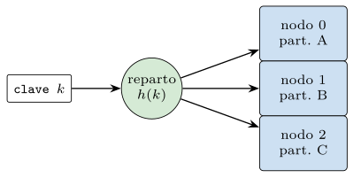
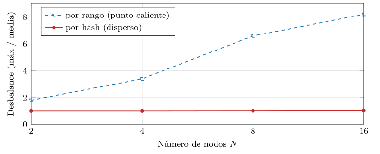
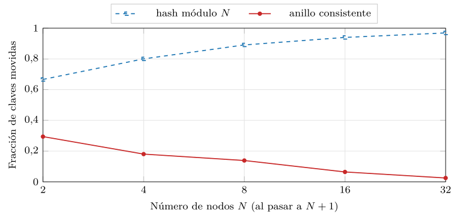
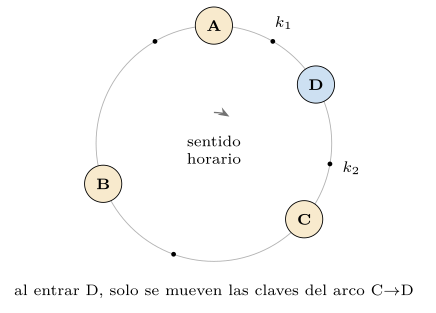
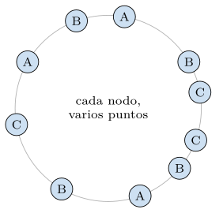
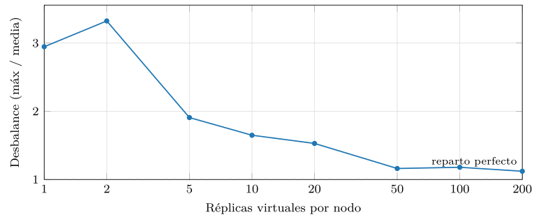
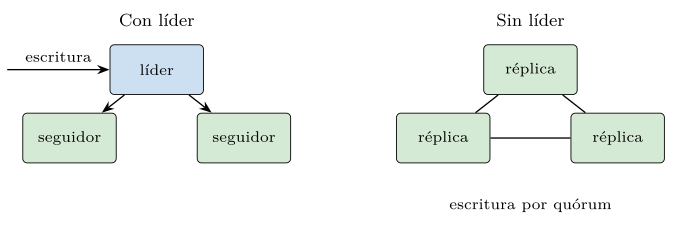
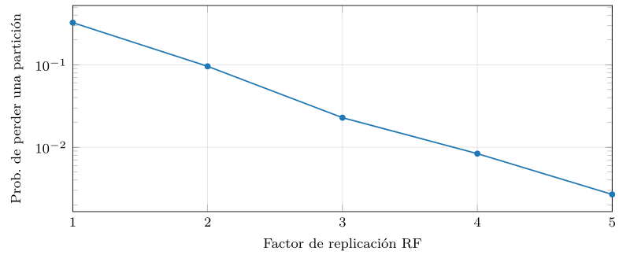
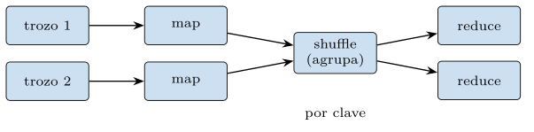
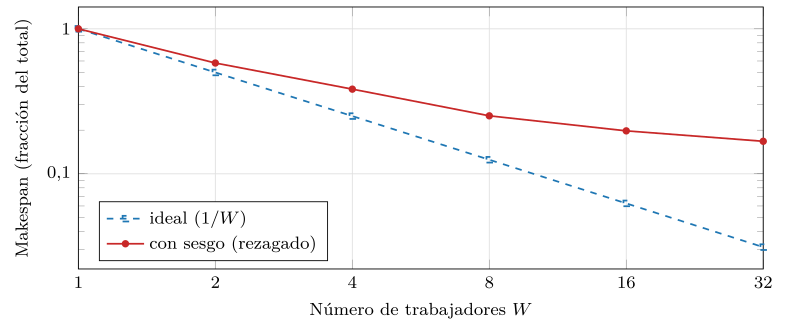

Capítulo 9. Mecánica de la distribución
Las familias del capítulo anterior comparten el supuesto que las hizo nacer: que los datos no caben en una máquina y han de repartirse entre muchas. Pero «repartirse» se ha usado hasta aquí como una promesa, no como un mecanismo. Este capítulo, el más sistémico de la segunda parte, desvela la maquinaria común a cualquier almacén distribuido —sea clave-valor, documental o columnar— en tres piezas: el particionado, que decide qué dato vive en qué nodo; la replicación, que guarda cada dato en varios nodos para sobrevivir a los fallos; y el procesamiento distribuido tipo Map-Reduce, que computa sobre datos repartidos sin arrastrarlos todos a un sitio.
Como en los capítulos anteriores, la maquinaria no se describe sin medirla. El módulo de la práctica —Python puro, ejecutable en el propio intérprete— implementa las cuatro mecánicas centrales y las cronometra, de modo que afirmaciones como «el hashing consistente mueve pocas claves» o «replicar más multiplica la durabilidad» dejan de ser eslóganes y se vuelven curvas con números. El lector saldrá entendiendo no solo cómo se distribuye, sino cuánto cuesta cada decisión: cuántas claves se reorganizan al crecer el clúster, cuánto se desequilibra la carga, cuánto baja el riesgo de pérdida con cada réplica y hasta dónde acelera de verdad un trabajo paralelo.
Y este capítulo cierra la segunda parte con un doble cierre. Cierra el estrato NoSQL dejando claro que la escala no es gratis: se paga en complejidad operativa, la de coordinar muchas máquinas que fallan por separado. Y cierra el largo recorrido por el igual a que ha ocupado las dos primeras partes: hasta aquí, toda consulta —en álgebra relacional, en SQL, en una clave-valor o en un anillo de hashing— ha buscado una coincidencia exacta, un dato que es igual a otro. La tercera parte dará el giro que da título al libro: de la coincidencia a la similitud, del igual a al cercano a. Pero ese giro solo se entiende habiendo visto antes, hasta el final, lo que el paradigma de la coincidencia exacta sabe y cuesta hacer.
Particionado: rango y hash
Particionar (o fragmentar, o shardear) es repartir el conjunto de datos en trozos —particiones— que viven en nodos distintos, de modo que cada nodo guarda y sirve solo una parte (figura 9.1). El objetivo es doble: que los datos quepan —la suma de las máquinas almacena lo que ninguna podría sola— y que la carga se reparta —cada nodo atiende solo las peticiones de su parte—. La pregunta central es cómo se decide qué clave va a qué nodo, porque de esa decisión dependen el equilibrio de la carga y, sobre todo, qué ocurre cuando el clúster cambia de tamaño.

Hay dos grandes criterios, ya asomados en el capítulo 6 al hablar de la clave de fragmentación. El reparto por rango asigna intervalos de clave a cada nodo: hace eficientes las consultas por rango, pero arriesga puntos calientes si la carga se concentra en un intervalo. El reparto por hash aplica una función de dispersión a la clave y reparte por el resultado: distribuye la carga de manera uniforme, a costa de perder la localidad de los rangos. La forma más simple del reparto por hash es el módulo: el nodo de una clave es \(h(\text{clave}) \bmod N\), con \(N\) el número de nodos. Funciona, pero esconde un defecto grave.
La diferencia no es académica, y se mide. Cuando las claves están sesgadas —como las marcas de tiempo, donde lo reciente concentra casi toda la actividad—, el reparto por rango envía ese pico al mismo nodo y crea un punto caliente, mientras que el de hash lo dispersa (figura 9.2). La práctica reparte cien mil claves con el 80 % concentrado en el 10 % más alto del espacio: por rango, el nodo más cargado recibe hasta ocho veces la media, y empeora al crecer el clúster; por hash, la carga se mantiene casi perfecta (desbalance \(\approx 1\)) sea cual sea el número de nodos. Es la razón por la que casi todos los almacenes distribuidos reparten por hash, aun a costa de perder las consultas por rango eficientes.

src/cap09_distribucion.py.El listado 9.1 contrapone los dos repartos, y la tabla 9.1 resume el compromiso: el rango conserva la localidad y arriesga puntos calientes; el hash la sacrifica y reparte parejo.
nodo_por_rango = clave // (espacio // n) # claves vecinas, mismo nodo
nodo_por_hash = h(clave) % n # vecinas, nodos dispersosListado 9.1. Los dos repartos: por rango conserva el orden; por hash lo dispersa.
| Por rango | Por hash | |
|---|---|---|
| Consultas por rango | eficientes | caras (datos dispersos) |
| Equilibrio de carga | riesgo de pico | parejo |
| Claves sesgadas | punto caliente | se dispersan |
El problema del módulo
El defecto aparece al cambiar el número de nodos. Si el reparto es \(h(k) \bmod N\) y se añade un nodo —se pasa a \(N+1\)—, el divisor cambia, y con él cambia el resto para casi todas las claves: casi todo el conjunto ha de moverse de nodo a la vez. En un sistema con terabytes repartidos, eso significa un trasiego masivo de datos por la red cada vez que el clúster crece o mengua, justo cuando peor viene —al añadir capacidad porque hay mucha carga, o al perder un nodo por un fallo—. La práctica lo mide (figura 9.3): al pasar de ocho nodos a nueve, el reparto por módulo mueve casi el 90 % de las claves, y la fracción solo empeora con más nodos. Reorganizar nueve de cada diez claves para añadir un nodo es inviable a escala.
El problema es simétrico al quitar un nodo, que es lo que ocurre —sin avisar— cada vez que una máquina falla. Con el módulo, pasar de \(N\) a \(N-1\) vuelve a cambiar el divisor y a reubicar casi todo, justo en el peor momento: el clúster, ya bajo estrés por la pérdida, ha de encima mover montañas de datos. Con el anillo, en cambio, las claves del nodo que se va pasan solo a su sucesor, y el resto no se entera. Esa simetría —crecer y menguar baratos— es lo que permite a un clúster grande tratar los fallos como rutina y no como catástrofe, y es la propiedad que el hashing consistente aporta y el módulo no.

src/cap09_distribucion.py.El anillo de hashing consistente
La solución, introducida por Karger et al. (1997) y popularizada por Dynamo (DeCandia et al. 2007), es el hashing consistente. La idea es elegante: en lugar de repartir por el resto módulo \(N\), se colocan tanto los nodos como las claves en un mismo espacio circular —un anillo— según su hash, y cada clave la sirve el primer nodo que se encuentra al avanzar en sentido horario (figura 9.4). La consecuencia es la que arregla el problema del módulo: al añadir un nodo, este se inserta en un punto del anillo y solo les roba a su sucesor las claves del arco que ahora cubre; todas las demás siguen donde estaban. Mover, en promedio, \(1/N\) de las claves en lugar de casi todas.

Una traza pequeña lo hace tangible (listado 9.2). Con tres nodos en posiciones \(10\), \(50\) y \(90\) de un anillo de \(0\) a \(99\), una clave en \(40\) la sirve el nodo en \(50\) —el primero a su derecha—; una en \(95\) da la vuelta y la sirve el de \(10\). Al entrar un nodo en \(60\), solo las claves del arco \((50,60]\) —antes del nodo en \(90\)— cambian de dueño; las de \(40\) y \(95\) no se mueven. Esa es, en miniatura, la propiedad que la figura 9.3 mide a gran escala.
anillo: nodos en 10, 50, 90 (claves van al sucesor horario)
clave 40 -> nodo 50 clave 95 -> nodo 10 (da la vuelta)
entra un nodo en 60:
clave 40 -> nodo 50 (sin cambio)
clave 55 -> nodo 60 (antes iba al 90: se mueve)
clave 95 -> nodo 10 (sin cambio)Listado 9.2. Traza del anillo: a quien sirve cada clave, y que cambia al entrar un nodo en la posicion 60.
El mecanismo cabe en unas pocas líneas (listado 9.3): se guardan los puntos de los nodos ordenados por su posición en el anillo, y para encontrar el nodo de una clave se hace una búsqueda binaria del primer punto a su derecha, dando la vuelta si se llega al final. La misma búsqueda binaria sobre una lista ordenada que el B-árbol del capítulo 3 usaba para localizar una fila, aquí localiza un nodo en el anillo.
def nodo(self, clave):
pos = h(clave)
lo, hi = 0, len(self.puntos)
while lo < hi: # busqueda binaria del sucesor
mid = (lo + hi) // 2
if self.puntos[mid][0] < pos:
lo = mid + 1
else:
hi = mid
if lo == len(self.puntos): # se da la vuelta al anillo
lo = 0
return self.puntos[lo][1]Listado 9.3. El nucleo del hashing consistente: el nodo de una clave es el primer punto del anillo a su derecha.
La figura 9.3 confirma la mejora: frente al casi 90 % del módulo, el anillo mueve solo el 14 % de las claves al pasar de ocho nodos a nueve, y la fracción baja con más nodos —al revés que el módulo—, hasta el 2,5 % con treinta y dos. Cuanto mayor es el clúster, más barato es crecer: justo la propiedad que la escala necesita.
El anillo entero —con réplicas virtuales incluidas— cabe en una clase pequeña (listado 9.4), y conviene verla completa porque es, casi sin cambios, el corazón de un Dynamo o un Cassandra. Construirla siembra \(V\) puntos por nodo y los ordena; localizar una clave es la búsqueda binaria de antes. No hay más: el reparto de un almacén distribuido a escala planetaria es, en esencia, esta media página de Python.
class Anillo:
def __init__(self, nodos, vnodos=1):
self.puntos = []
for nodo in nodos: # cada nodo fisico...
for v in range(vnodos): # ...siembra V puntos
self.puntos.append((h(f"{nodo}#{v}"), nodo))
self.puntos.sort() # tabla ordenada de reparto
def nodo(self, clave):
pos = h(clave)
lo, hi = 0, len(self.puntos)
while lo < hi: # sucesor por busqueda binaria
mid = (lo + hi) // 2
if self.puntos[mid][0] < pos:
lo = mid + 1
else:
hi = mid
return self.puntos[lo % len(self.puntos)][1] # da la vueltaListado 9.4. El anillo de hashing consistente completo, con replicas virtuales, en una clase.
Réplicas virtuales para equilibrar
El anillo desnudo tiene un defecto propio: con pocos nodos, el reparto es desigual, porque los arcos entre puntos consecutivos tienen tamaños muy distintos al azar, y un nodo con un arco grande recibe mucha más carga que otro con uno pequeño. La solución es dar a cada nodo físico varias posiciones en el anillo —réplicas virtuales o vnodos—, de modo que cada nodo cubra muchos arcos pequeños repartidos en lugar de uno grande (figura 9.5). Cuantos más vnodos, más se promedian los arcos y más se iguala la carga.

La práctica lo mide (figura 9.6). Con un solo punto por nodo, el nodo más cargado recibe casi el triple de la media —un desbalance de 2,9—; con cincuenta réplicas virtuales por nodo baja a 1,16, y con doscientas, a 1,12: la carga queda casi perfectamente repartida. Esa es la razón de que los sistemas reales —Dynamo, Cassandra— usen del orden de cientos de vnodos por nodo: el coste es una tabla de puntos algo mayor, y la ganancia es un reparto equilibrado que ningún nodo convierte en cuello de botella.

src/cap09_distribucion.py.Replicación y quórum
Particionar reparte los datos, pero no los protege: si el nodo que guarda una partición cae, esa partición desaparece. Por eso, a la par que se particiona, se replica: cada dato se guarda en varios nodos a la vez. La replicación persigue tres fines distintos, y conviene no confundirlos. La durabilidad: que el dato sobreviva a la pérdida de un nodo, porque hay copias. La disponibilidad: que se pueda seguir leyendo y escribiendo aunque algún nodo esté caído, usando otra réplica. Y el reparto de lecturas: que muchas réplicas atiendan lecturas en paralelo, multiplicando la capacidad de lectura.
Con líder y sin líder
Hay dos arquitecturas de replicación (figura 9.7). En la replicación con líder (leader-follower), un nodo es el líder y recibe todas las escrituras, que propaga a los seguidores; las lecturas pueden ir a cualquiera. Da un orden de escritura claro y es fácil de razonar, pero el líder es un cuello de botella de escritura y un punto que, al caer, exige elegir uno nuevo. En la replicación sin líder (leaderless), la de Dynamo y Cassandra, cualquier réplica acepta escrituras, y la coherencia se gestiona por quórum —el \(R+W>N\) del capítulo 7— con reconciliación de conflictos. Es más disponible y simétrica, al precio de los conflictos y la consistencia eventual que el capítulo 7 estudió. La tabla 9.2 contrapone los dos esquemas eje por eje.
| Eje | Con líder | Sin líder |
|---|---|---|
| Escrituras | solo al líder | a cualquier réplica |
| Orden | claro (lo fija el líder) | por quórum y versiones |
| Punto de fallo | el líder (hay que reelegir) | ninguno (simétrico) |
| Conflictos | raros | posibles (reconciliar) |
| Ejemplos | PostgreSQL, MySQL | Dynamo, Cassandra |

El número de copias es el factor de replicación (RF). Sobre la coherencia entre ellas ya se dijo lo esencial en el capítulo 7: la desigualdad \(R+W>N\) garantiza que lectura y escritura se solapan, y graduar \(R\) y \(W\) recorre el espectro entre consistencia fuerte y disponibilidad. Lo que aquí interesa medir es el otro efecto del RF, el que el capítulo 7 no tocó: la durabilidad.
Cuánta durabilidad compra cada réplica
Una partición con RF réplicas se pierde solo si fallan a la vez sus RF nodos. Si cada nodo falla de forma independiente con probabilidad \(p\), la probabilidad de perder una partición dada cae aproximadamente como \(p^{RF}\): cada réplica añadida divide el riesgo por un factor. La práctica lo mide colocando muchas particiones, cada una con sus RF réplicas en nodos distintos al azar, y contando cuántas pierden todas sus copias bajo un fallo del 30 % de los nodos (figura 9.8). El resultado es contundente: con una sola copia se pierde el 32 % de las particiones; con dos, el 9,6 %; con tres, el 2,3 %; con cinco, el 0,27 %. Por eso el factor de replicación tres es el ajuste por defecto de tantos sistemas: es el primero que lleva el riesgo a una fracción de un por ciento sin multiplicar en exceso el coste de almacenamiento.
El núcleo de la medida es una sola línea (listado 9.5): una partición se pierde si todas sus réplicas están entre los nodos caídos. La tabla 9.3 pone los números uno al lado del otro, y se ve la caída geométrica —cada réplica divide el riesgo por un factor próximo a \(1/p\)— junto a su coste, que crece solo de forma lineal: ese desajuste entre beneficio geométrico y coste lineal es lo que hace de replicar una ganga hasta cierto punto.
replicas = rng.sample(range(nodos), rf) # RF nodos distintos
perdida = all(r in caidos for r in replicas) # todas caidas?Listado 9.5. El nucleo de la durabilidad: se pierde la particion si caen sus RF replicas a la vez.
| RF | Prob. de pérdida | Coste de almacenamiento |
|---|---|---|
| 1 | 32 % | \(1\times\) |
| 2 | 9,6 % | \(2\times\) |
| 3 | 2,3 % | \(3\times\) |
| 5 | 0,27 % | \(5\times\) |

src/cap09_distribucion.py.Observación. Particionado y replicación se combinan, y su combinación es la del capítulo 5 sobre la nube. Un sistema distribuido reparte cada dato en una partición (para que quepa y se equilibre) y guarda cada partición en RF nodos (para que sobreviva). En la nube, esa replicación se extiende a varias zonas de disponibilidad, de modo que la durabilidad ya no depende de un disco sino de un quórum de copias repartidas geográficamente —exactamente lo que el capítulo 5 llamó «la base de datos es el registro» replicado—. El particionado y la replicación que aquí se miden son, así, la mecánica concreta detrás de la durabilidad-como-replicación de la nube.
Esta conexión cierra un hilo que viene del capítulo 1. Allí se presentó la jerarquía de almacenamiento —memoria rápida y volátil, disco lento y persistente— y se anunció que la nube le añadía un peldaño: el almacenamiento remoto y replicado, donde un dato dura no por vivir en un soporte fiable sino por vivir en muchas copias a la vez. Este capítulo ha mostrado la maquinaria de ese peldaño: el particionado que decide en qué nodos vive cada dato y la replicación que lo copia en varios. Cuando un servicio gestionado de la nube ofrece «durabilidad de once nueves», lo que hay debajo es exactamente esto —particionado por hash, replicación con factor tres o más, repartida entre zonas—, operado por el proveedor en lugar de por uno mismo. La nube no cambia la mecánica; la automatiza y la cobra.
Map-Reduce y procesamiento distribuido
Queda la tercera pieza. Particionar y replicar resuelven almacenar a escala; falta procesar a escala: ¿cómo se computa algo —un recuento, una agregación, un índice— sobre datos repartidos en miles de nodos? Traerlos todos a una máquina para procesarlos anularía el propósito de haberlos repartido. La respuesta, que cambió la industria, es invertir el movimiento: llevar el cómputo a los datos en lugar de los datos al cómputo. Cada nodo procesa su parte localmente, y solo se mueve por la red el resultado, mucho más pequeño.
El modelo Map-Reduce
Map-Reduce (Dean y Ghemawat 2004), nacido en Google sobre su sistema de ficheros distribuido (Ghemawat et al. 2003), formalizó ese principio en dos funciones que el programador escribe y un marco distribuye (figura 9.9). La función map se aplica a cada trozo de la entrada, en el nodo donde ese trozo vive, y emite pares clave-valor. El shuffle agrupa todos los pares por clave y los reparte entre los nodos reductores. La función reduce recibe cada clave con todos sus valores y los agrega. El programador solo escribe map y reduce; el marco se encarga del reparto, el movimiento de datos y los fallos.

El ejemplo canónico es el recuento de palabras, y en pequeño cabe entero, esta vez repartido de verdad entre \(W\) trabajadores (listado 9.6): el shuffle decide el reductor de cada clave por su hash —el mismo principio del particionado—, de modo que cada palabra cae siempre en el mismo reductor venga del map que venga. Esa función de reparto del shuffle es donde el sesgo de los datos se traduce en desequilibrio entre reductores, como se verá.
def map_reduce(textos, w):
# map: cada trozo emite pares (palabra, 1)
pares = [(p, 1) for trozo in textos for p in trozo]
# shuffle: repartir cada clave a su reductor por hash
cubos = [dict() for _ in range(w)]
for clave, uno in pares:
d = cubos[h(clave) % w]
d[clave] = d.get(clave, 0) + uno
# reduce: cada reductor agrega lo suyo (en paralelo)
salida = {}
for d in cubos:
salida.update(d)
return salidaListado 9.6. Map-Reduce repartido entre W reductores: el shuffle asigna cada clave a un reductor por su hash.
La versión secuencial mínima —sin reparto— deja ver el esqueleto desnudo (listado 9.8): map emite un uno por cada palabra, el shuffle agrupa los unos por palabra, y reduce los suma. La misma estructura —map que extrae, shuffle que agrupa, reduce que agrega— sirve para contar visitas por página, sumar ventas por región o construir un índice invertido, y se ejecuta sobre datos repartidos sin que el programador piense en el reparto.
Ejecutado sobre un texto real —doscientas mil palabras con frecuencias naturales, sesgadas—, el recuento devuelve lo esperable (listado 9.7): unas pocas palabras acaparan la mayor parte de las apariciones, y la cola se alarga con miles de palabras raras. Esa distribución sesgada, la ley de Zipf que ya apareció con las cachés del capítulo 8, no es un detalle del ejemplo: es la causa del problema de la sección siguiente.
palabras mas frecuentes:
palabra0000 24875
palabra0001 12156
palabra0002 8022
palabra0003 5925
palabra0004 4865
... ... (cola larga de palabras raras)Listado 9.7. Salida real del recuento: unas pocas palabras acaparan las apariciones (distribucion sesgada, Zipf).
def map_reduce_conteo(texto):
pares = [(palabra, 1) for palabra in texto] # map
grupos = {}
for clave, uno in pares: # shuffle
grupos.setdefault(clave, []).append(uno)
return {c: sum(unos) for c, unos in grupos.items()} # reduceListado 9.8. Recuento de palabras con Map-Reduce: map, shuffle y reduce, el esqueleto de todo trabajo distribuido por lotes.
Hasta dónde acelera: el sesgo y el rezagado
La promesa de Map-Reduce es que el trabajo se acelera al añadir trabajadores. Pero esa aceleración tiene un techo, y la práctica lo mide sobre un recuento de palabras real con frecuencias sesgadas (figura 9.10). Con un reparto perfecto, el tiempo —el makespan, lo que tarda el último en terminar— caería como \(1/W\) con \(W\) trabajadores. Lo que se observa es que el reparto real se aleja del ideal y, peor, se estanca: por más trabajadores que se añadan, no se baja de cierto suelo. La causa es el sesgo de los datos: una palabra muchísimo más frecuente que las demás carga a su reductor por encima del resto, y como el makespan lo fija el reductor más cargado —el rezagado, el straggler—, ese reductor se convierte en el cuello de botella que ningún número de trabajadores adicionales alivia. Es la versión distribuida de la ley de Amdahl (Amdahl 1967): la parte que no se puede repartir limita la aceleración total.
El núcleo de la medida lo deja claro (listado 9.9): el trabajo de cada reductor es la suma de las cuentas de las palabras que le tocan por hash, y el makespan es el máximo de esas sumas. Como una sola palabra —la más frecuente— ya pesa casi una décima parte del total, ningún reparto puede bajar el makespan por debajo de lo que tarda el reductor que la procesa: ese es el suelo de la figura 9.10, y por eso el sesgado se estanca mientras el ideal sigue cayendo.
carga = [0] * w
for palabra, n in conteo.items():
carga[h(palabra) % w] += n # el reducer lo decide el hash
makespan = max(carga) # lo fija el reductor mas cargadoListado 9.9. El nucleo de la medida del makespan: el reductor mas cargado fija el tiempo; una clave enorme pone el suelo.
Frente a este límite, los sistemas reales aplican remedios que confirman la regla: detectar la clave caliente y partirla en sub-claves que varios reductores procesan en paralelo (una agregación parcial previa), o lanzar tareas especulativas —copias del rezagado en otro nodo, por si el original va lento—. Ninguno elimina el sesgo; lo reparten o lo solapan, que es todo lo que se puede hacer cuando el dato no es uniforme.

src/cap09_distribucion.py.El marco aporta, además, tolerancia a fallos casi gratis: como cada tarea map o reduce es una función pura sobre su trozo, si un nodo cae, su tarea simplemente se re-ejecuta en otro, sin afectar al resto. Esa combinación —mover el cómputo a los datos, expresar el trabajo como map y reduce, y re-ejecutar lo que falla— es la que permitió procesar la web en clústeres de máquinas corrientes. El marco original —el Map-Reduce de Google y su realización abierta, Hadoop— es hoy sobre todo un hito histórico: lo han desplazado sus sucesores —Spark (Zaharia et al. 2012) y los motores de flujo de datos, más en memoria y con grafos de tareas más ricos—, que refinan el modelo sin cambiar su esencia; el patrón de map, shuffle y reduce sigue latiendo bajo Spark, Flink y los motores de datos de la nube.
Un clúster, de principio a fin
Las tres mecánicas no viven aisladas: se combinan en cada operación de un almacén distribuido real. Conviene verlas juntas, montando sobre las piezas anteriores un clúster de juguete y siguiendo una escritura, una lectura y un trabajo por lotes de principio a fin. El reparto se hace por hash, con réplicas virtuales para equilibrar y factor de replicación tres para durar; es, salvo detalles, el diseño de Dynamo o Cassandra.
El primer paso es construir el anillo con sus vnodos (listado 9.10): por cada nodo físico se siembran \(V\) puntos en el anillo, etiquetados con el nombre del nodo, y se ordenan. Esa tabla ordenada es toda la estructura de reparto que el clúster necesita.
puntos = []
for nodo in nodos: # cada nodo fisico...
for v in range(vnodos): # ...siembra V puntos en el anillo
puntos.append((h(f"{nodo}#{v}"), nodo))
puntos.sort() # tabla ordenada de repartoListado 9.10. Construir el anillo: V puntos por nodo fisico, ordenados.
Elegir las réplicas es recorrer el anillo desde el punto de la clave, anotando nodos físicos distintos hasta tener RF (listado 9.11); como un nodo aparece en varios puntos por los vnodos, hay que saltar los repetidos para no poner dos copias en el mismo nodo. Es el detalle que convierte el anillo de reparto en anillo de replicación.
def siguientes_distintos(anillo, clave, rf):
pos = h(clave)
i = indice_sucesor(anillo.puntos, pos) # primer punto a la derecha
elegidos = []
while len(elegidos) < rf:
nodo = anillo.puntos[i % len(anillo.puntos)][1]
if nodo not in elegidos: # saltar vnodos repetidos
elegidos.append(nodo)
i += 1
return elegidosListado 9.11. Seleccionar RF replicas en el anillo: los siguientes nodos fisicos distintos a partir de la clave.
Escritura, lectura y trabajo por lotes
Una escritura localiza la clave en el anillo y, desde su nodo, recorre el anillo tomando los siguientes RF nodos físicos distintos como réplicas; confirma cuando \(W\) de ellas responden (listado 9.12). Es el particionado (encontrar el nodo) y la replicación (las RF copias) y el quórum (esperar \(W\)) operando en una sola orden.
def escribir(clave, valor, rf, w):
destinos = siguientes_distintos(anillo, clave, rf) # RF replicas
confirmadas = 0
for nodo in destinos:
if nodo.guardar(clave, valor):
confirmadas += 1
return confirmadas >= w # quorum de escritura (cap. 7)Listado 9.12. Una escritura: localizar en el anillo, replicar en RF nodos distintos, confirmar W.
Una lectura hace lo simétrico: consulta \(R\) de las RF réplicas y, si \(R+W>RF\), la respuesta más reciente entre ellas es la última escrita (listado 9.13); de paso, repara las rezagadas, como en el capítulo 7. Particionado, replicación y quórum, otra vez, en una sola operación.
def leer(clave, rf, r):
replicas = siguientes_distintos(anillo, clave, rf)[:r]
respuestas = [nodo.leer(clave) for nodo in replicas]
return max(respuestas, key=lambda x: x.version) # la mas nuevaListado 9.13. Una lectura por quorum: R replicas, la version mas reciente, con R+W>RF.
Y un trabajo por lotes sobre todo el clúster —reconstruir un índice, agregar métricas— se expresa como un Map-Reduce que corre en cada nodo sobre su partición local y junta los resultados parciales (listado 9.14), sin mover los datos de sitio. Las tres mecánicas, así, no son temas separados sino las tres caras de cada operación distribuida: dónde vive el dato, cuántas copias tiene y cómo se computa sin moverlo.
parciales = [nodo.map_local(tarea) for nodo in nodos] # cada uno, lo suyo
resultado = reduce_global(parciales) # juntar lo pequenoListado 9.14. Un trabajo por lotes: map local en cada nodo, reduce de los parciales, sin mover datos.
Coordinador, nodos y fallo
Todo ello cabe en un coordinador que reúne el anillo, la replicación y el quórum en una clase (listado 9.15). Es el componente que un cliente ve: le pide guardar o leer una clave, y él se encarga de localizar las réplicas en el anillo, escribir en RF y esperar el quórum, o leer de R y devolver la más reciente. Las tres mecánicas del capítulo, encapsuladas en una interfaz tan simple como la de un diccionario.
class Coordinador:
def __init__(self, nodos, rf=3, w=2, r=2):
self.anillo = Anillo(nodos, vnodos=100)
self.rf, self.w, self.r = rf, w, r
def _replicas(self, clave):
# los RF nodos fisicos distintos a partir del punto de la clave
return siguientes_distintos(self.anillo, clave, self.rf)
def guardar(self, clave, valor, version):
ok = 0
for nodo in self._replicas(clave):
if nodo.vivo() and nodo.guardar(clave, valor, version):
ok += 1
return ok >= self.w # quorum de escritura
def leer(self, clave):
vivos = [n for n in self._replicas(clave) if n.vivo()]
respuestas = [n.leer(clave) for n in vivos[:self.r]]
return max(respuestas, key=lambda x: x.version)Listado 9.15. Un coordinador de cluster: anillo + replicacion + quorum tras una interfaz de diccionario.
Al otro lado del coordinador están los nodos, cada uno un almacén local que guarda su parte y conoce su propio estado de salud (listado 9.16). Un nodo no sabe nada del anillo ni de las réplicas: solo guarda, lee y dice si está vivo. Toda la inteligencia de la distribución vive en el coordinador; el nodo es deliberadamente tonto, y esa separación —listo arriba, simple abajo— es lo que permite añadir y quitar nodos sin cambiarlos.
class Nodo:
def __init__(self, nombre):
self.nombre = nombre
self.datos = {} # clave -> (valor, version)
self.caido = False
def vivo(self):
return not self.caido
def guardar(self, clave, valor, version):
actual = self.datos.get(clave)
if actual is None or version > actual[1]:
self.datos[clave] = (valor, version) # gana la mas nueva
return True
def leer(self, clave):
return self.datos.get(clave)Listado 9.16. Un nodo de almacenamiento: guarda su parte y conoce su salud; ignora el anillo y las replicas.
Conviene seguir un fallo a través de esta clase, porque ahí se ve la replicación trabajar (listado 9.17). Si una de las tres réplicas de una clave está caída, la escritura sigue confirmando mientras las otras dos alcancen el quórum \(W=2\), y la lectura sigue respondiendo desde las vivas; cuando la caída sane, el hinted handoff del capítulo 7 le entregará lo que se perdió. La caída de un nodo, que sin replicación perdería sus datos, se convierte aquí en un suceso del que el clúster se recupera solo.
replicas de "x": [n2, n5, n8] ; cae n5
guardar("x"): n2 ok, n8 ok -> 2 >= W: CONFIRMA
leer("x"): n2, n8 responden -> devuelve la mas reciente
n5 vuelve: hinted handoff le entrega las escrituras que se perdioListado 9.17. Traza de un fallo con RF=3, W=2: el clúster sigue sirviendo y se repara al volver el nodo.
Puestas las piezas, el clúster entero se ejercita en unas pocas líneas (listado 9.18): se crean los nodos, se monta el coordinador, se escribe una clave, se tira un nodo, y se comprueba que la lectura sigue respondiendo. Es la segunda parte del libro condensada en un guion ejecutable: particionar por el anillo, replicar con factor tres, confirmar por quórum y sobrevivir a un fallo, todo tras una interfaz tan simple como la de un diccionario.
nodos = [Nodo(f"n{i}") for i in range(6)]
c = Coordinador(nodos, rf=3, w=2, r=2)
c.guardar("usuario:7", "Ada", version=1) # replica en 3 nodos
print(c.leer("usuario:7")) # -> ("Ada", 1)
# cae uno de los nodos que guardan la clave
for n in c._replicas("usuario:7"):
n.caido = True
break # tiramos solo el primero
c.guardar("usuario:7", "Ada B.", version=2) # 2 vivos: alcanza W=2
print(c.leer("usuario:7")) # -> ("Ada B.", 2): sobreviveListado 9.18. El cluster en accion: escribir, tirar un nodo y comprobar que la lectura sobrevive.
Que este guion funcione pese a la caída —que la escritura confirme y la lectura devuelva el valor nuevo con un nodo menos— es, en miniatura, la promesa de la distribución cumplida: el sistema es más fiable que cualquiera de sus piezas. Y es también el resumen operativo de la segunda parte: relajadas las garantías justas (capítulos 6 y 7), elegida la familia adecuada (capítulo 8) y montada la mecánica de reparto y réplica (este), se obtiene un almacén que escala y tolera fallos, al precio en complejidad que la sección anterior detalló.
Práctica: la distribución, medida
Las cuatro gráficas anteriores salen de un mismo módulo, src/cap09_distribucion.py —Python puro, sin servicio ni GPU, según la tabla de recursos—, que implementa las cuatro mecánicas en memoria y las cronometra (listado 9.19). No reproduce un clúster real —para eso están los servicios de infra/—, sino que aísla, en cada mecánica desnuda, la propiedad que importa: cuántas claves se mueven, cómo se equilibra la carga, cuánto baja el riesgo, hasta dónde acelera el reparto.
def main():
anunciar() # recursos: python puro, cpu, sin gpu
simular_movimiento() # modulo vs anillo -> cap09_movimiento.dat
simular_hotspot() # rango vs hash -> cap09_hotspot.dat
simular_balance() # vnodos -> balance -> cap09_balance.dat
simular_durabilidad() # RF vs perdida -> cap09_durabilidad.dat
simular_mapreduce() # makespan vs W -> cap09_mapreduce.dat
demostracion(15) # 15 claves y su nodo en el anilloListado 9.19. El motor del experimento: las cuatro mecanicas de la distribucion, con semilla fija para reproducir las curvas.
El corazón de la medida del movimiento es directo (listado 9.20): se asignan las mismas claves con \(N\) y con \(N+1\) nodos, y se cuenta cuántas cambian de dueño, con cada esquema. La diferencia entre el módulo y el anillo no es de constantes, sino de cuánto del conjunto se reorganiza: casi todo frente a una fracción.
# modulo: cambia si el resto cambia al cambiar el divisor
mov_mod = sum(1 for c in claves if h(c) % n != h(c) % (n + 1))
# anillo: cambia si su nodo asignado es otro tras anadir uno
mov_ani = sum(1 for c in claves if a1.nodo(c) != a2.nodo(c))Listado 9.20. El nucleo de la medida del movimiento: que claves cambian de nodo al pasar de N a N+1.
Las cinco medidas, leídas juntas, componen el cuadro del coste de distribuir (tabla 9.4). Cada una pone número a una decisión: cómo repartir para crecer barato y equilibrado, cuántas copias para durar, y hasta dónde paralelizar. Ninguna cifra es absoluta —son maquetas en memoria—, pero la forma de cada una —el acantilado, la saturación, la caída geométrica— es propiedad del mecanismo, no de la máquina, y es esa forma la que guía el diseño.
| Medida | Qué compara | Resultado |
|---|---|---|
| Movimiento | módulo vs anillo | el anillo mueve \(\sim 1/N\) |
| Hotspot | rango vs hash | el hash evita el punto caliente |
| Balance | vnodos | cientos igualan la carga |
| Durabilidad | factor RF | el riesgo cae como \(p^{RF}\) |
| Map-Reduce | ideal vs sesgo | el rezagado pone un suelo |
Los núcleos de las otras medidas son igual de escuetos (listado 9.21): el balance cuenta la carga por nodo y la divide por la media; el hotspot hace lo mismo para los dos repartos. En todos, lo medido es una propiedad del reparto, no una astucia de programación.
# balance: carga del nodo mas cargado / media ideal
desbalance = max(carga.values()) / (k / nodos)
# hotspot: lo mismo, para reparto por rango y por hash
des_rango = max(carga_rango) / media
des_hash = max(carga_hash) / mediaListado 9.21. Nucleos de las medidas de balance y de hotspot: contar carga y compararla con la media.
La demostración: quince claves y su nodo
Fiel a la convención, el módulo muestra quince claves al azar y el nodo del anillo que les toca (listado 9.22). La muestra hace visible el reparto: claves consecutivas caen en nodos distintos, sin patrón aparente, que es justo lo que un buen particionado por hash busca —repartir sin que el orden de las claves concentre la carga.
clave nodo
------------- ----
clave-599159 n5
clave-34167 n2
clave-449722 n2
clave-506002 n4
... ...Listado 9.22. Quince claves al azar y el nodo que les asigna el anillo (muestra): el reparto dispersa sin patron.
Lo que la práctica no decide
Reunidas, las cinco medidas se traducen en un puñado de decisiones de diseño que todo clúster ha de tomar, y para las que el capítulo da ya un criterio:
- Cómo repartir.
-
Por hash, salvo que las consultas por rango dominen; el hash evita los puntos calientes que las claves sesgadas crean por rango (figura 9.2).
- Hashing consistente.
-
Siempre, frente al módulo: crecer mueve \(\sim 1/N\) de las claves en lugar de casi todas (figura 9.3).
- Cuántas réplicas virtuales.
-
Del orden de cientos por nodo, que bastan para equilibrar la carga (figura 9.6) a cambio de una tabla algo mayor.
- Qué factor de replicación.
-
Tres por defecto: lleva el riesgo por debajo del por ciento (figura 9.8) sin disparar el almacenamiento.
- Cuántos trabajadores.
-
Los que el reparto permita aprovechar; más allá del suelo que el sesgo impone, añadir trabajadores no acelera (figura 9.10).
Pero las maquetas miden la forma de cada mecánica —la fracción que se mueve, cómo se equilibra la carga, cómo cae el riesgo, dónde se estanca la aceleración—, no el rendimiento absoluto de un clúster real, que depende de la red, los discos y la implementación. Tampoco capturan los problemas más espinosos de la distribución real, que son operativos: detectar qué nodo ha caído de verdad —y no solo está lento o incomunicado—, coordinar la entrada y salida de nodos sin servir datos a medio mover, o reequilibrar sin saturar la red. Esos problemas, que el capítulo 7 rozó con el teorema CAP, son la complejidad que la escala cobra, y ninguna fórmula los elimina: se gestionan con ingeniería y operación cuidadosas. La herramienta cuantifica los compromisos de diseño; la operación de un sistema distribuido vivo es otra disciplina, que empieza donde la medida acaba.
El precio operativo de la escala
Las mecánicas medidas son la parte limpia, la que cabe en fórmulas y curvas. Pero distribuir cobra un precio que ninguna gráfica captura y que conviene nombrar antes de cerrar la parte: la complejidad operativa. Un sistema de un nodo está vivo o muerto, y se sabe cuál; un sistema de mil nodos vive en un limbo permanente donde, en todo momento, alguno está lento, otro incomunicado y otro a medio reincorporarse, y distinguir esos estados es, en sí, un problema difícil. Estos son los frentes que la escala abre y que la teoría de este capítulo deja fuera:
- Detección de fallos.
-
Decidir si un nodo ha caído o solo va lento es indecidible en general: una red puede retrasar un mensaje tanto como lo retrasaría un nodo muerto. Los sistemas usan latidos y tiempos de espera, y se equivocan en ambos sentidos —dar por muerto a un vivo, o esperar a un muerto—, con consecuencias que el teorema CAP del capítulo 7 ya anticipaba.
- Pertenencia al clúster.
-
Saber qué nodos forman el clúster ahora mismo —y propagar las altas y bajas sin que dos partes discrepen— exige protocolos de pertenencia, a menudo por gossip, que difunden los cambios como un rumor hasta que todos coinciden.
- Reequilibrado.
-
Cuando entra o sale un nodo, hay que mover datos —los pocos que el anillo decide— sin saturar la red ni servir, durante el traslado, datos a medio mover. Hacerlo en caliente, mientras el clúster atiende tráfico, es un arte.
- Contrapresión y puntos calientes.
-
Un nodo sobrecargado —por un punto caliente que el reparto no previó, o por una clave viral— ha de poder frenar a quien le envía trabajo sin derrumbar el sistema entero, y detectarse para repartir su carga.
- Observabilidad.
-
Con mil nodos, entender qué está pasando —dónde está la latencia, qué réplica va rezagada, qué partición está caliente— exige instrumentar y agregar métricas de todo el clúster, que es a su vez un problema distribuido.
Ninguno de estos frentes tiene una solución cerrada en una fórmula; se gestionan con ingeniería, herramientas y oficio, y son la razón de que operar un sistema distribuido sea una disciplina propia. La escala, en suma, no se paga solo en consistencia (capítulo 7) o en código de reparto (este): se paga, sobre todo, en la complejidad de mantener vivo y coherente un organismo de muchas piezas que fallan por separado. Tenerlo presente es lo que separa el diseño sobre el papel de la operación real, y es la nota con la que conviene cerrar el estrato NoSQL.
Síntesis y puente a la tercera parte
Este capítulo ha desmontado la maquinaria de la distribución en sus piezas y las ha medido. El particionado reparte los datos, y el hashing consistente con réplicas virtuales lo hace de modo que crecer el clúster mueva pocas claves y la carga quede equilibrada —frente al reparto por módulo, que reorganiza casi todo—. La replicación guarda cada partición en varios nodos, y cada réplica añadida divide el riesgo de pérdida, lo que explica el factor tres tan común. Y Map-Reduce procesa lo repartido llevando el cómputo a los datos, con una aceleración real que el sesgo y el rezagado limitan. Las cuatro mecánicas, juntas, son lo que convierte la promesa de escala de las familias NoSQL en un sistema que de verdad funciona sobre muchas máquinas.
Con esto se cierra la segunda parte, y conviene mirar atrás para ver hasta dónde se ha llegado. La primera parte construyó el dato estructurado y sus garantías sobre un nodo; la segunda las relajó para ganar escala —el esquema flexible, la consistencia eventual, las familias especializadas, la mecánica distribuida—. Pero en todo ese recorrido, de Codd a Map-Reduce, una cosa no ha cambiado: la consulta ha sido siempre por coincidencia. Buscar ha significado encontrar lo que es igual a un valor —la fila con este identificador, la clave con este nombre, la palabra con esta cadena exacta—. Toda la potencia de los índices, las particiones y los quórumes se ha puesto al servicio de localizar, deprisa y a escala, una coincidencia exacta.
Ahí está el límite que la tercera parte rompe. Hay preguntas que la coincidencia exacta no sabe responder: «documentos parecidos a este», «imágenes como esta», «la respuesta más relevante a esta pregunta». No piden lo que es igual, sino lo que está cerca, y para ellas el igual a no sirve: hace falta una noción de semejanza, una forma de medir cuánto se parecen dos cosas y de encontrar las más próximas. Ese es el giro que da título al libro, y la tercera parte lo aborda desde su raíz: cómo se representa el significado de un dato de modo que la cercanía entre representaciones capture la semejanza entre datos. El igual a, que ha gobernado las dos primeras partes, cede el paso al cercano a.
Ejercicios propuestos
Lecturas recomendadas
Karger et al. (1997): el artículo que introdujo el hashing consistente, base del reparto de todos los almacenes distribuidos modernos.
DeCandia et al. (2007): el diseño de Dynamo, que llevó a la práctica el hashing consistente con réplicas virtuales y la replicación sin líder por quórum.
Dean y Ghemawat (2004): el artículo de Map-Reduce, que popularizó el procesamiento distribuido por lotes sobre clústeres de máquinas corrientes.
Ghemawat et al. (2003): el sistema de ficheros distribuido de Google sobre el que Map-Reduce se apoya; el almacenamiento que hace posible el cómputo.
Kleppmann (2017): el tratamiento unificado y moderno del particionado, la replicación y el procesamiento distribuido, con el detalle operativo que aquí se esboza.